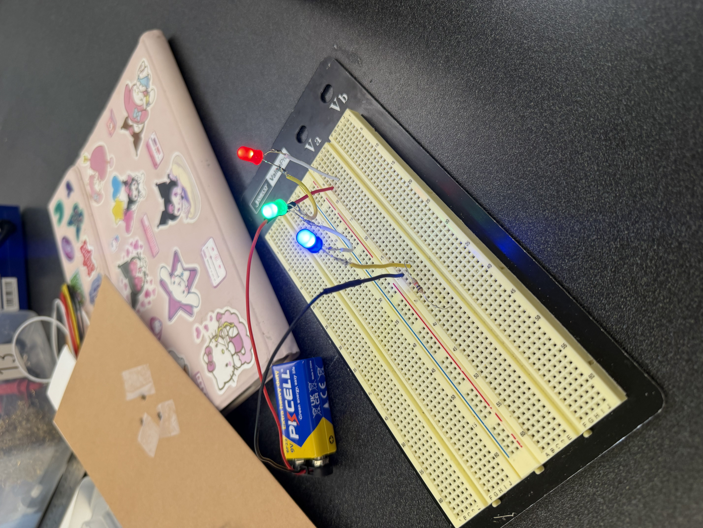
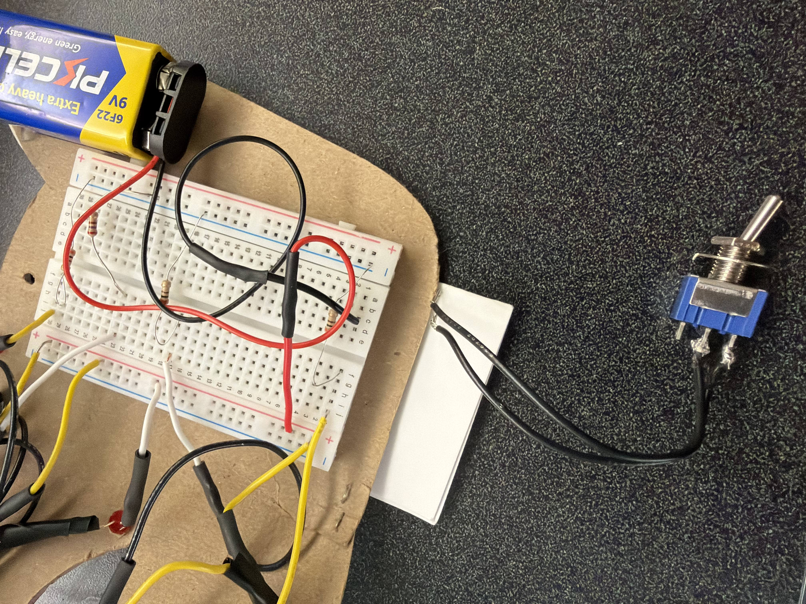

My original test strands to get used to soldering.My first papercraft, here I am figuring out which papercraft method to use and how it works.

My first successful test strand using a breadboard and battery.
Stage 2: Making the half mask

When I first started my mask, I was under the impression it would only be for the half mask portion of the assignment. However, I ended up really liking the design and decided to make it into my finished mask.